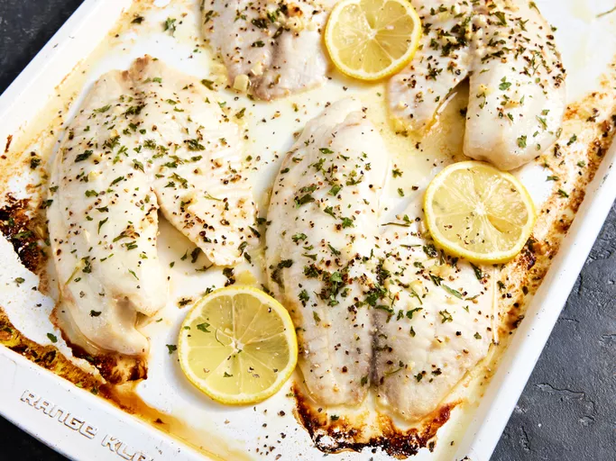

Tilapia and Aspargus

Prep Time: 30 minutes
Cook Time: 12 minutes
Ingredients
- 10 asparagus stalks
- 2 tiliapia filets (4 oz each)
- 1 lemon
- 1 garlic clove
- Dry parsely
Directions
- Preheat oven to 400°F
- Rinse asparagus and dry. Coat lightly with oil, salt, and pepper. Set aside
- Lightly brush tiliapia with oil and sprinkle them lemon juice
- Season with salt, pepper, and parsley
- Dice the garlic clove and sprinkle the fish
- Put the fish and asparagus in the oven for 12 minutes
- Serve with quinoa or other grain and enjoy!